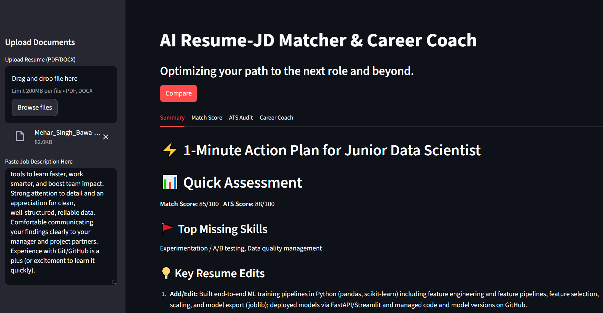

Agentic AI · Multi-Agent Orchestration
Agentic AI Resume Screening System
A four-agent pipeline that screens resumes against job descriptions, with a dedicated Critic Agent running a bounded reflection loop to catch and correct weak evaluations before final output.
- LangGraph
- LangChain
- LangSmith
- OpenAI API
- Pydantic
- Reflection Pattern
- Streamlit UI
- Python